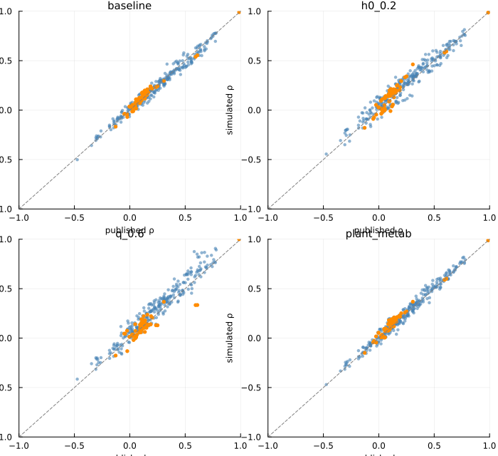

The reproduction of Domínguez-García et al. (2019) rests on a reconstructed simulator. Its settings were calibrated to match summaries of the published Dataset S1:
half-saturation density h₀ = 0.4;
functional-response exponent 1 + q with q = 0.3;
no plant metabolism;
metabolic exponent −0.25.
Two conclusions of the reproduction depend on this simulator:
the correlation structure: simulated metric correlations reproduce the published three groups (an end-to-end ensemble);
the early-response artefact: MR0, MAmax and Mtmax form a group only under the published, misaligned pulse weights (the early response to pulse).
This vignette asks whether either conclusion changes when one setting changes. Each variant uses the same community seeds as the baseline, so differences between them are not due to drawing different webs.
Variant
Setting changed
Calibrated value
h0_0.2, h0_0.7
half-saturation density h₀ = 0.2 or 0.7
0.4
q_0.6, q_0.1
functional-response exponent 1 + q, q = 0.6 or 0.1
0.3
plant_metab
plants pay metabolic costs
no
xexp_+0.25
metabolic exponent +0.25
−0.25
using DominguezGarcia2019
using CSV, DataFrames, Statistics, Printf
using Plots
using Random: Xoshiro
data = joinpath(pkgdir(DominguezGarcia2019), "data")
pub = read_metrics(joinpath(data, "dominguez-garcia2019", "Dataset_S2.csv"))
# the baseline: the first 1,200 seeds of the calibrated ensemble, the seeds every variant used
base = CSV.read(joinpath(data, "simulated", "ensemble_v4.csv"), DataFrame)
base = base[in.(base.network, Ref(Set("Sim$(20191217 + k)" for k in 1:1200))), :]
files = ["h0_0.2" => "h0_0.2", "h0_0.7" => "h0_0.7", "q_0.6" => "q_0.6",
"plant_metab" => "plant_metabolism", "q_0.1" => "q_0.1",
"xexp_+0.25" => "metabolic_exponent_+0.25"]
ensembles = ["baseline" => base;
[name => CSV.read(joinpath(data, "simulated", "robustness", f * ".csv"), DataFrame)
for (name, f) in files]]
ensembles = [name => d[5 .<= d.N .<= 99, :] for (name, d) in ensembles]
DataFrame(variant = first.(ensembles), communities = nrow.(last.(ensembles)))
A community is kept only if it reaches a locally stable equilibrium that keeps at least 90% of its species. The number of assembly draws needed per viable community measures how open a setting is to that rule. Three variants (h₀ = 0.7, q = 0.1 and an exponent of +0.25) were stopped after a 90-minute budget, which explains their small samples.
viability = DataFrame(variant = first.(ensembles),
communities = nrow.(last.(ensembles)),
draws_per_community = [round(mean(d.attempts); digits = 1) for (_, d) in ensembles],
species_kept = [round(median(d.N ./ d.iniN); digits = 3) for (_, d) in ensembles],
plant_share = [round(median(d.Nb ./ d.N); digits = 3) for (_, d) in ensembles])
Figure 1: Assembly draws per viable community (log scale), on the same 1,200 seeds.
h₀ = 0.2 makes assembly easier: about 7 draws per community, against 24 for the baseline.
Plant metabolism doubles the draws, and h₀ = 0.7 needs about 13 times as many.
q = 0.1 and an exponent of +0.25 almost never give a viable community: thousands and hundreds of draws each, so only 6 and 9 communities were reached in the budget. The paper’s assembly rule itself largely closes these parts of parameter space.
As in the comparison of structures across datasets, Spearman correlations are computed within four richness bins (5–15, 16–30, 31–60 and 61–99 species) and averaged. The metric network is then partitioned by Louvain modularity. A coarser binning than the paper’s size classes is needed because each variant has at most 1,200 communities.
const BINS = [(5, 15), (16, 30), (31, 60), (61, 99)]
const SIX = (:Amax, :tmax, :MRinf, :MR0, :MAmax, :Mtmax) # the metrics with an SI version
function structure(m)
b = [something(findfirst(r -> r[1] ≤ n ≤ r[2], BINS), 0) for n in m.N]
m = m[b .> 0, :]
m.N = b[b .> 0]
sc = size_correlations(m; sizes = 1:length(BINS), max_sample = typemax(Int))
k = length(sc.labels)
R = [let v = filter(!isnan, sc.rho[i, j, :])
isempty(v) ? NaN : mean(v)
end for i in 1:k, j in 1:k]
g, Q = modular_groups(metric_network(R); runs = 50, rng = Xoshiro(1))
return (R = R, labels = sc.labels, groups = g, Q = Q)
end
# the metrics of one ensemble under the published or the SI's median-metric weights
function metrics(d, weights)
d = copy(d)
weights == "SI" && foreach(c -> (d[!, c] = d[!, Symbol(c, "_si")]), SIX)
return prepare_metrics(d)
end
ref = structure(pub)
for k in 1:maximum(ref.groups)
println("published group $k: ", join(ref.labels[ref.groups .== k], " "))
end
published group 1: R0 Is Amax tmax Rinf MRinf S <s_ij> TM <TM> minTM <CE> TE maxCE
published group 2: MR0 MAmax Mtmax
published group 3: RM <RM> maxRM SM <SM> maxSM <RE> maxRE <SE> maxSE
Each simulated structure is compared with the published one and with the baseline:
r(ρ): the correlation between the 351 pairwise metric correlations;
mean \|Δρ\|: their mean absolute difference;
Rand: the agreement of the two partitions;
early: whether MR0, MAmax and Mtmax fall in one group.
upper(R) = [R[i, j] for j in axes(R, 2) for i in axes(R, 1) if i < j]
function agreement(a, b)
x, y = upper(a.R), upper(b.R)
ok = isfinite.(x) .& isfinite.(y)
return cor(x[ok], y[ok]), mean(abs.(x[ok] .- y[ok]))
end
rand_index(a, b) = mean((a[i] == a[j]) == (b[i] == b[j]) for i in eachindex(a) for j in eachindex(a) if i < j)
early(s) = length(unique(s.groups[[findfirst(==(l), s.labels) for l in ("MR0", "MAmax", "Mtmax")]])) == 1
structures = Dict((name, w) => structure(metrics(d, w)) for (name, d) in ensembles, w in ("published", "SI"))
rows = map(Iterators.product(("published", "SI"), first.(ensembles))) do (w, name)
s = structures[(name, w)]
d = Dict(ensembles)[name]
r, Δ = agreement(ref, s)
rb, _ = agreement(structures[("baseline", w)], s)
(variant = name, weights = w, amplify = round(100mean(d[!, w == "SI" ? :MAmax_si : :MAmax] .> 1 + 1e-12); digits = 1),
r_published = round(r; digits = 2), mean_abs_diff = round(Δ; digits = 3),
rand_published = round(rand_index(ref.groups, s.groups); digits = 2),
r_baseline = round(rb; digits = 2), groups = maximum(s.groups), early = early(s))
end
table = DataFrame(vec(rows))
amplify is the percentage of communities whose median pulse is amplified (MAmax \> 1).
early_metric = [l in ("MR0", "MAmax", "Mtmax") for l in ref.labels]
pair_early = [early_metric[i] || early_metric[j] for j in eachindex(ref.labels) for i in eachindex(ref.labels) if i < j]
panels = map(["baseline", "h0_0.2", "q_0.6", "plant_metab"]) do name
y = upper(structures[(name, "published")].R)
x = upper(ref.R)
p = scatter(x[.!pair_early], y[.!pair_early]; ms = 2.5, msw = 0, alpha = 0.6, color = :steelblue,
title = name, titlefontsize = 10, legend = false, xlims = (-1, 1), ylims = (-1, 1))
scatter!(p, x[pair_early], y[pair_early]; ms = 3, msw = 0, color = :darkorange)
plot!(p, [-1, 1], [-1, 1]; color = :gray, ls = :dash)
end
plot(panels...; layout = (2, 2), size = (700, 640), xlabel = "published ρ", ylabel = "simulated ρ",
guidefontsize = 8)

Figure 2: Pairwise metric correlations in four well-sampled variants against the published ones, under the published weights. Orange: pairs involving MR0, MAmax or Mtmax.
Where a variant can be sampled, the structure holds. h₀ = 0.2, q = 0.6 and plant metabolism each give over 1,150 communities. Under the published weights they reproduce the published correlations about as well as the baseline does (r(ρ) 0.97–0.99, against 0.99). Each gives three groups close to the published ones (Rand 0.91–1.00).
They also agree with the baseline on the same seeds:r_baseline is 0.96–0.99 under the published weights. Changing these settings moves the metrics, not their correlations.
h₀ = 0.7 (93 communities) still finds three groups, with a weaker fit to the published correlations (r(ρ) 0.84, and 0.86 against the baseline), as expected from a twelfth of the sample.
For each partition, the table lists the metrics grouped with MAmax, and says where MR0 sits: with MAmax, with the sensitivities to press (the group holding RM), or elsewhere.
members(s, l) = s.labels[s.groups .== s.groups[findfirst(==(l), s.labels)]]
function mr0_with(s)
m = members(s, "MR0")
"MAmax" in m && return "MAmax"
"RM" in m && return "press sensitivities"
return join(filter(!=("MR0"), m), " ")
end
DataFrame(variant = table.variant, weights = table.weights,
with_MAmax = [join(filter(!=("MAmax"), members(structures[(r.variant, r.weights)], "MAmax")), " ")
for r in eachrow(table)],
MR0_with = [mr0_with(structures[(r.variant, r.weights)]) for r in eachrow(table)])
R0 Is tmax MR0 Mtmax \<s_ij\> TM \<CE\> maxCE SM \<SM\> maxSM maxSE
MAmax
12
q_0.1
SI
R0 \<s_ij\> maxCE SM \<SM\> \<SE\> maxSE
13
xexp_+0.25
published
R0 Is Amax tmax MR0 Mtmax S \<s_ij\> \<CE\> RM maxRM maxSE
MAmax
14
xexp_+0.25
SI
press sensitivities
Under the published weights MR0, MAmax and Mtmax share a group in every variant. h₀ = 0.2 and plant metabolism give exactly the published partition. In the baseline, q = 0.6 and h₀ = 0.7, the extremal pulse metrics R0 and Amax join the group, much as in the large communities of the early-response vignette. With h₀ = 0.7, tmax also moves to the press group.
Under the SI’s weights the group breaks up the same way in every well-sampled variant. MAmax and Mtmax are left alone or as a pair, and MR0 joins the sensitivities to press. With almost no amplified median pulse, MAmax and Mtmax are nearly constant across communities, so they correlate with nothing.
Figure 3: Share of communities that amplify a median pulse, under the published and the SI’s pulse weights.
In every variant the group forms under the published weights and not under the SI’s. The SI’s weights leave 0–0.1% of communities amplifying a median pulse. This extends the early-response artefact from the calibrated model to every setting tried.
Amplification depends on q; the group does not. With q = 0.6 only 4.5% of communities amplify under the published weights, against 21% in the baseline, yet the group still forms. The misaligned weights still make MAmax and Mtmax vary between communities.
The two barely sampled variants say little. With q = 0.1 and an exponent of +0.25, 6 and 9 communities give partitions with two groups and correlations far from the published ones (r(ρ) 0.47 and 0.53). That MR0, MAmax and Mtmax share a group there is unsurprising when 27 metrics are split in two, and is not evidence either way.
One setting at a time. Interactions between settings are untested.
The SI rows are compared with a structure that contains the artefact. Their lower r(ρ) against the published correlations is expected and is not a failure of the variant.
The binning is coarser than the paper’s. Four richness bins replace the paper’s three size classes because the variants have 1,200 communities, not 10,000.
Budgets, not convergence, set the small samples. The h₀ = 0.7, q = 0.1 and +0.25 runs were stopped after 90 minutes; their communities are those reached in that time, so their composition may differ from a full run’s.
The variant ensembles are in data/simulated/robustness/ (see data/simulated/README.md). They were simulated with scripts/simulate_dataset.jl and the setting given as KEY=VALUE, and the summary in this vignette can be printed with scripts/robustness.jl.
Settings
This document was generated with Documenter.jl version 1.20.0 on Saturday 21 November 2026. Using Julia version 1.13.4.